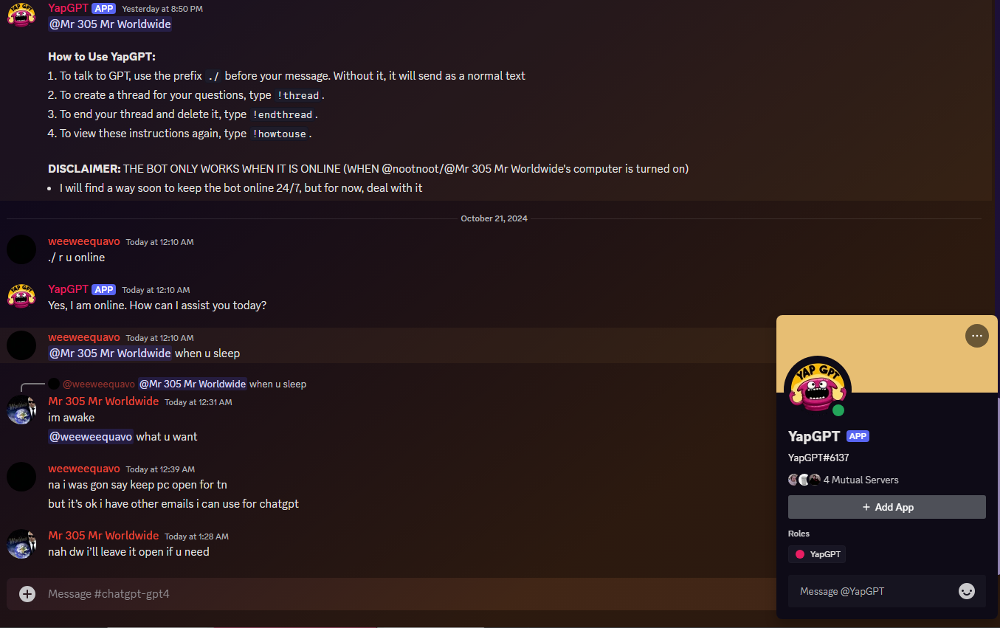
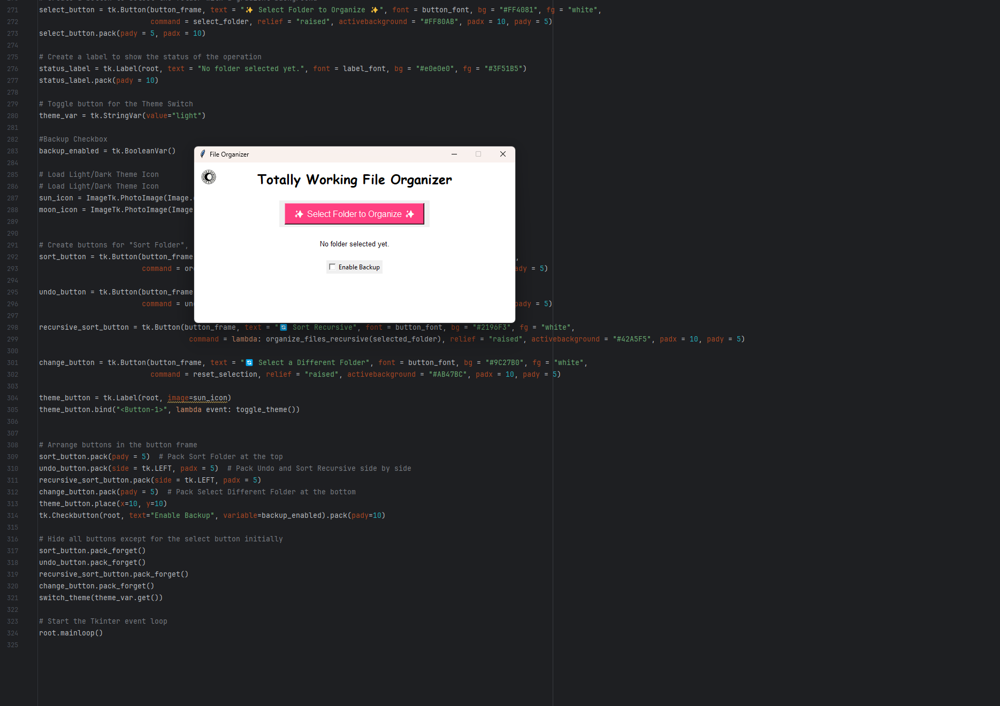
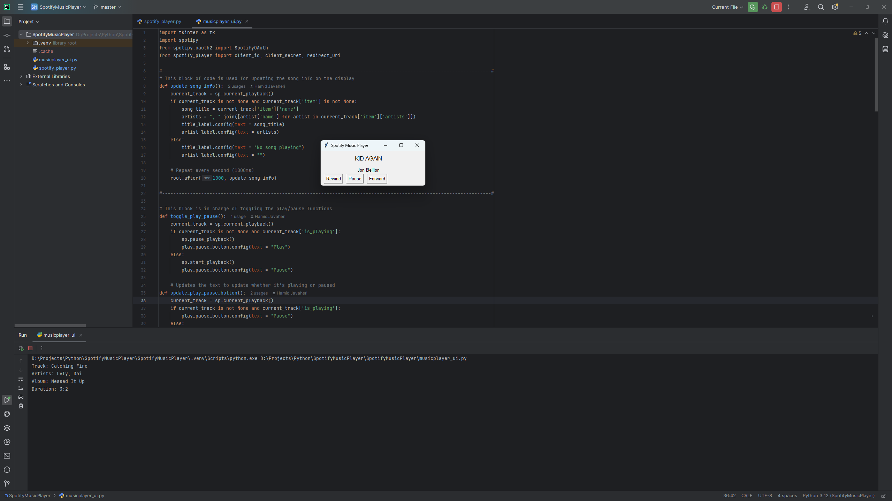
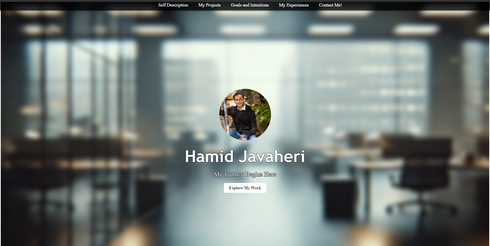

Hamid Javaheri
My Journey Begins Here
Explore My WorkI'm a passionate Computer and Software Engineer with a natural curiosity for all things tech—particularly Machine Learning, AI, and Database Systems. I thrive on solving complex problems using cutting-edge technology, always looking for new challenges to tackle and innovative solutions to create. My career goal? To contribute to a forward-thinking tech company where I can make a real impact. Eventually, I dream of starting my own company that shapes the future of innovation.But hey, I'm not all work and no play! Outside the digital world, I'm a jack of all trades. I have a deep love for music—whether it's playing instruments or getting lost in different genres. Photography and videography let me capture the world from unique perspectives, and my love for sports keeps me on my toes. You'll often find me engaged in everything from MMA martial arts to swimming, volleyball, and soccer—anything that keeps the adrenaline pumping.
Cooking is another one of my creative outlets, allowing me to unwind after a busy day of coding or team projects. And of course, gaming is where I reconnect with friends and recharge. I like to think that these diverse interests give me a unique edge—whether it's multitasking, staying organized, or thinking creatively about new ways to solve problems. Let's connect, collaborate, and build something amazing together!

Python and Discord.py
Enhance your Discord server with AI-powered conversations and controls!
GithubChatGPT Discord Bot is a feature-rich Python-based bot that brings the power of OpenAI's ChatGPT right into your Discord server. Fully integrated with Discord, it offers an array of custom commands and server management capabilities.
This bot is perfect for Discord communities seeking to boost interactivity, automate tasks, and enhance user engagement with cutting-edge AI.

Python and Tkinter
Organize your folders/files with one click!
GithubSortify is a compact yet powerful Python application designed to streamline your digital workspace. With just a few clicks, you can select any folder on your system and instantly organize its contents into designated, pre-defined folders. You have the flexibility to choose between two modes:
This tool is perfect for users looking to effortlessly bring order to cluttered directories, making file management faster and more efficient.

Python and Tkinter
Control your music with a simple, intuitive player!
GithubSpotify Music Player is one of my first Python projects, designed with simplicity and functionality in mind. Built using Python and Tkinter, this application allows users to control their Spotify music seamlessly.
This project showcases my early steps in programming and building practical desktop applications. It's a great lightweight tool for managing your music with ease!

HTML, CSS, and JavaScript
Explore my projects and development journey!
Visit WebsitePortfolio Website is my personal showcase, built to highlight the diverse projects I've developed. It's designed to be clean, responsive, and easy to navigate, providing a seamless user experience across devices.
This website serves as a central hub for my work, showcasing my growth and skills as a developer while offering potential collaborators or employers a glimpse into my capabilities.